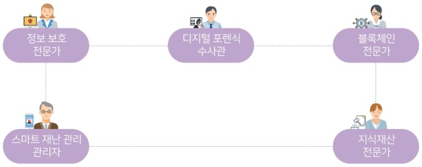

- 로봇
- 바이오
- 연결
- 안전
안전
정보 보호 전문가: 정보 보호 수준을 진단하고 중요한 정보를 보호하기 위한 해결 방안을 제시
디지털 포렌식 수사관: 휴대폰 · PC · 서버 등에서 데이터를 수집하고 분석하여 범죄 수사에 활용
블록체인 전문가: 누구도 정보를 조작할 수 없도록 하는 블록체인 기술을 개발
스마트 재난 관리 전문가: 스마트 기기를 활용해서 재난을 효과적으로 대응
지식재산 전문가: 특허, 브랜드, 디자인 등 지적 활동으로 발생하는 지식재산을 보호
